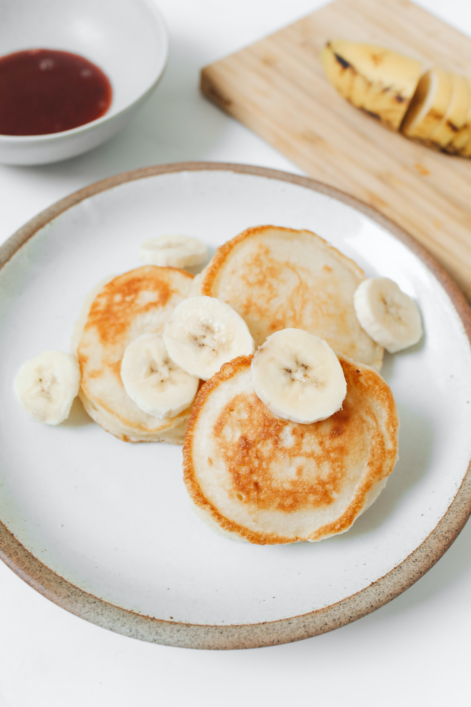

No sugar no oil all real
we are india's first oil-free and suger-free granola company
We believe in not only having delicious foods but nutritious foods that you can feel good about eating
our granola is made with the best ingredients we can find and made with love in our own home in beautiful shaker heights
Being sugar free , we use whole dates as our swetter of choice. None of the processed sugar in any of its forms here! pleas take a look at our available products to find out mre about our amazing and unique flavors!
Order Online
because our granola is home-produced we are covered under Ohio cottage laws . this means we are unable to sell outside the state of Ohlo for the time being . therefor in order to purchase online you have use one of the options below
Some of our products
Banana for Coconuts
This is a list of coconut dishes and foods that use coconut as a primary ingredient. The term coconut can refer to the entire coconut palm or the seed, or the fruit, which, botanically, is a drupe,
Creamed coconut, also known as coconut butter, is a coconut product made from the unsweetened dehydrated fresh pulp of a mature coconut, ground to a semi-solid white creamy paste.
Certified Organic
Mark's Butter Chocolate

Chocolate cake is made with chocolate. It can also include other ingredients.[1] These include fudge, vanilla creme, and other sweeteners. The history of chocolate cake goes back to the 17th century, when cocoa powder from the Americas were added to traditional cake recipes.
be sold as it was "rock cacao" or ground into powder.The processes transformed chocolate from an exclusive luxury to an i nexpensive daily snack.
Certified Organic
Fried Chicken Bites

Chicken can be prepared in a vast range of ways, including baking, grilling, barbecuing, frying, and boiling. Since the latter half of the 20th century, prepared chicken has become a staple of fast food. Chicken is sometimes cited as being more healthful than red meat,
The poultry farming industry that accounts for chicken production takes on a range of forms across different parts of the world. In developed countries,
Certified Organic
Order Using Any OF These